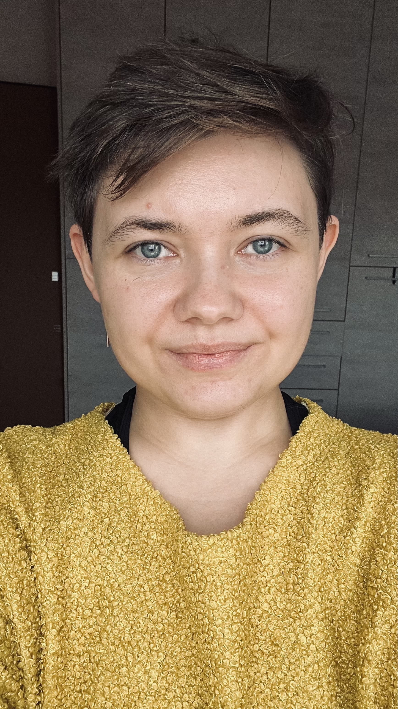

Секс
и желание
Возбуждение, отсутствие желания, оргазм, концентрация во время секса, сенсорная перегрузка и инициатива.
Психология · сексология · нейроотличия
Я Пола Шейнер — психолог — сексолог. Помогаю нейроотличным людям разобраться в сексуальности, отношениях и жизни с СДВГ и аутизмом — без стыда и попыток переделать себя.

01 / Обо мне
Я создаю пространство, в котором можно спокойно исследовать себя: свои желания, тело, отношения, способы жить и то, как именно устроен ваш опыт.
Я работаю онлайн на русском языке, со взрослыми людьми по всему миру. В работе для меня важны безопасность, контакт, честность и научная опора.
02 / С чем я работаю
Можно прийти с одним вопросом.
Можно — с ощущением «я не понимаю, что происходит».
Возбуждение, отсутствие желания, оргазм, концентрация во время секса, сенсорная перегрузка и инициатива.
Страх отвержения, сексуальная самооценка, открытые и полиаморные отношения, поиск своих правил близости.
СДВГ и аутизм, прокрастинация, организация жизни и понимание того, как особенности влияют на отношения и секс.
03 / Подход
Я использую мультимодальный подход: соединяю элементы консультативной психологии, гештальт-подхода, экзистенциальной терапии, КПТ и других направлений. Каждый раз смотрю на конкретный запрос и подстраиваю работу под него.
04 / Форматы работы
Запись — в Telegram.
Берём один конкретный вопрос и разбираем его глубоко: находим первопричину, собираем карту проблемы и определяем первые шаги.
Для тех, кто хочет последовательно работать с одним или несколькими вопросами, пробовать изменения и возвращаться к возникающим сложностям.
05 / Образование
У меня есть собственный опыт СДВГ и аутизма, особенности сексуальности и длительный опыт личной психотерапии. Я опираюсь на личный опыт, образование, практику и исследования.
06 / Частые вопросы
Да. Для этого подходит аналитическая встреча: мы выбираем один запрос и подробно разбираем, как он устроен.
Сейчас я работаю только индивидуально и не веду парную или семейную терапию.
Онлайн, на русском языке, с людьми из любой точки мира.
Напишите мне в Telegram.
Можно начать с одного вопроса